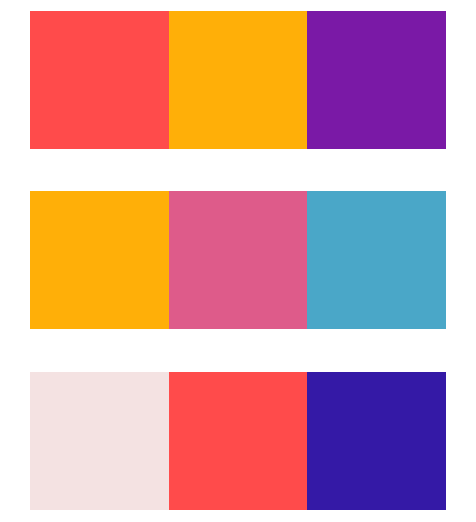

Material Futures creates dye, so colour was important to consider and use throughout the design process. We tried out several different schemes and combinations to find something that combined the energy of the lab with the overall scientific tone. We also worked closely (and remotely!) with a graphic designer who was redesigning the brand logo, to ensure that the lab had a colourful, but not overwhelming feel, and that the site and logo felt cohesive.